Reap is a corporate card and expense management platform serving finance managers and business owners across Asia. Our users don't manage one card — they manage dozens, across teams, with different limits, roles, and policies.
In 2025, the company made an early bet: build an AI agent that replaces the dashboard UI for card operations. The thesis was right. The execution was not — and my job was to help fix that.
The alpha shipped with engineering ambition but no UX foundation to match it. I diagnosed four distinct failure modes — not from the backend out, but from the user's perspective in: what broke trust, what made good design structurally impossible, and what had to change before any interface work could begin.
The agent showed "Completed ✅" then immediately displayed an error. Progress indicators were decoupled from reality. No correction mid-flow. Responses appeared all at once after a 47-second wait.
This is not a latency problem. It's an honesty problem. An AI that lies about its own state cannot be trusted with financial actions.
No one had clearly defined what the agent should and shouldn't do. The same agent handling card operations also responded to mental health queries with helpline numbers. Without clear boundaries, there was no safe design surface to work with — and no way to design confidently for any of it. Before interface work could begin, product clarity had to come first.
The agent lived in a generic chat drawer. No quick actions. No structured confirmation. No visual card preview. The UX was a blank text box bolted onto a broken backend.
Streaming responses, honest progress indicators, instant acknowledgment — core UX requirements — were structurally impossible. A guardrails pipeline ran 3 sequential LLM calls before the agent could start, adding 2.5 seconds of overhead before any response began. Design intent kept colliding with infrastructure constraints.
I ran discovery across three parallel tracks: user pain points, technical constraints, and building an AI design framework for the team.
"The ops team couldn't finish basic card creation. Testing was abandoned. The previous agent's 47-second response time is not a baseline — it's a failure mode."— Known problems
Before designing any interface, I established a capability framework with the product team. The question was never "what can AI do?" It was "what should AI do, and how does it know the difference?"
Design principle: AI chat is not always the answer. The right interface depends on whether the user knows what they want, needs to be told something, or needs guided action. This became the decision filter for every UX choice in v2.
Do a task end-to-end for the user.
"Create monthly allowance cards for all new joiners in December, both physical and virtual."
Agent handles the full flow. User reviews and confirms.
Help users complete tasks faster by filling gaps intelligently.
"Auto-fill card creation forms based on previous data, category, and company policy."
Agent reduces keystrokes and decision fatigue.
Help users do their job better by surfacing what they'd miss.
"Flag overspending, suspicious transactions, duplicated charges, dormant cards."
Agent acts as a second pair of eyes.
For card operations, users know what they want. We chose a conversational copilot with structured confirmation moments — not a pure chat interface.
The v2 design was built on one principle: the agent earns trust through honesty, speed, and knowing its limits.
Through close collaboration with an engineer, I defined 8 distinct agent states covering the full lifecycle of a card operation conversation, a concept entirely absent in the alpha.
| State | When it occurs | UX behavior | Design intent |
|---|---|---|---|
| Idle / Empty | Agent ready, no conversation | Quick action chips: Create card, Freeze card, View cards, Summarise spending — role-scoped. | Lower activation energy. No blank cursor. |
| Waiting for input | Agent asked a question | Input field active. Previous question stays visible. No timeout pressure. | Conversation feels like dialogue, not interrogation. |
| Processing | Agent executing an action | Step-by-step progress. Streaming text. Each step is honest about system state. | Transparency over speed illusion. |
| Disambiguation | Multiple matches found | Agent presents options with distinguishing details: name, email, role, card last 4 digits. | Avoids wrong-person errors in financial contexts. |
| Confirmation required | High-impact or destructive action | Full card preview. Explicit confirm required. Card termination: additional password re-entry. | Human authority over AI execution. |
| Action complete | Action succeeded | Clear success message with result details. Never followed by an error. | Closure without ambiguity. |
| Error | Action failed | Plain-language explanation. Actionable next step. | Honesty over appearance of competence. |
| Out of scope | User asked something the agent can't do | Agent names its scope, says what it can't do, offers within-scope alternatives. | Bounded capability is a feature, not a bug. |
I worked closely with the AI engineer rebuilding the agent from scratch. Understanding the technical constraints wasn't optional, it was the only way to design responsibly.
The alpha's NeMo Guardrails added 1.5–3.5 seconds of overhead before the agent even started — three sequential LLM calls.
Understanding this taught me that UX requirements like streaming and instant acknowledgment were architectural asks, not just design preferences. I had to advocate for them with engineering context, not just user empathy.
The initial PRD said "conversation context should not be preserved" on error. I challenged this — if a user is mid-flow and hits a technical failure, losing context forces a full restart. We revised to: preserve context, surface the specific failure, let the user retry.
I also raised the audit trail question for destructive actions, making the case that the UX needed to surface this — not just log it in the backend.
Design principle: In agentic systems, UX requirements and architecture are inseparable. You cannot design honest progress indicators if the backend doesn't stream. You cannot design safe confirmation flows if the agent has direct write access. I treated the engineering architecture as a design constraint — and as a lever.
Before committing to a direction, we explored how Reap AI should surface within the product. The question wasn't just what AI could do — it was where and how it should appear. We evaluated 4 desktop interaction models and 2 mobile entry points against three criteria: discoverability, content visibility, and suitability across task complexity.
Baseline — transactions page, AI trigger in nav
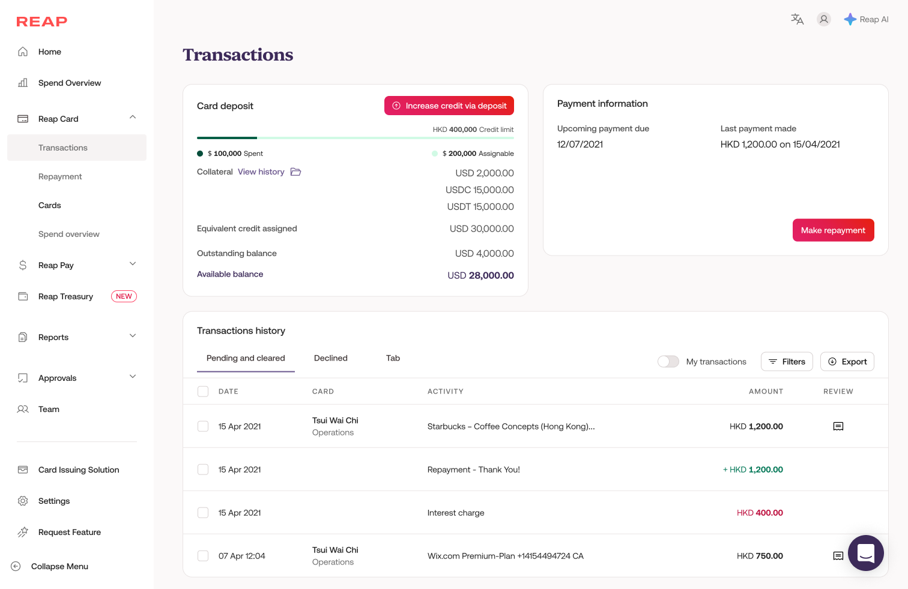
Desktop — 4 interaction models
The AI drawer slides in from the right and overlays the main content. Users keep access to AI capabilities but lose partial visibility of the page behind.
Pros
Cons
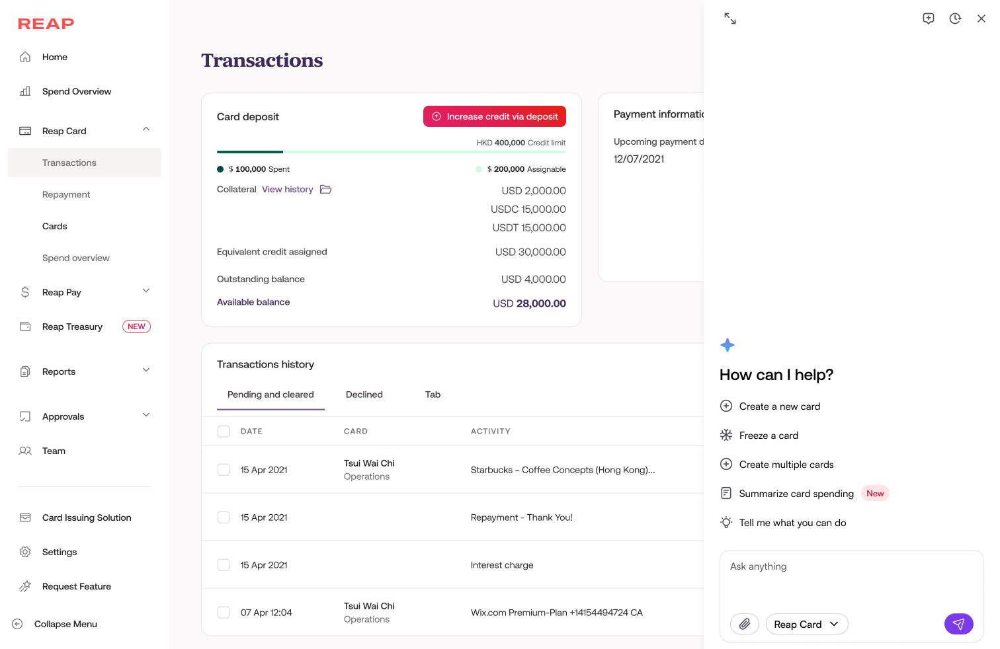
A compact floating card anchored near the content. Designed for quick, discrete actions — expandable to a drawer or full screen when the task demands more space.
Pros
Cons
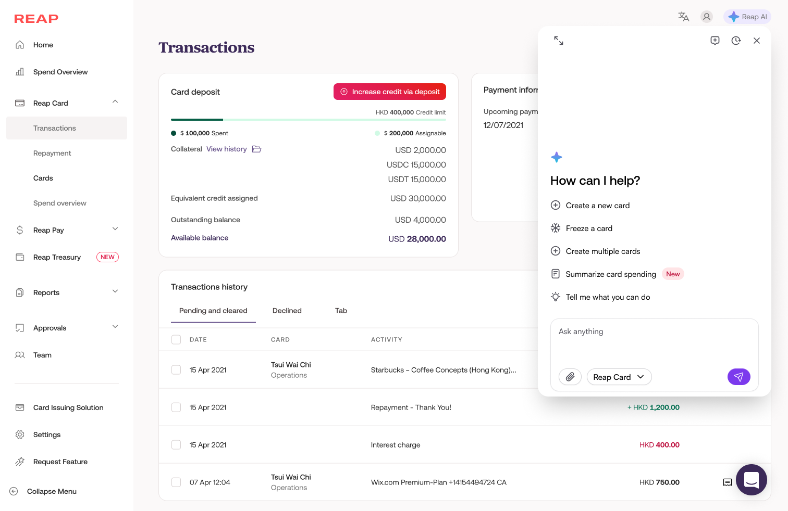
The main content area compresses to make room for the AI drawer. The page stays visible but narrower — a cleaner compromise than full overlay.
Pros
Cons
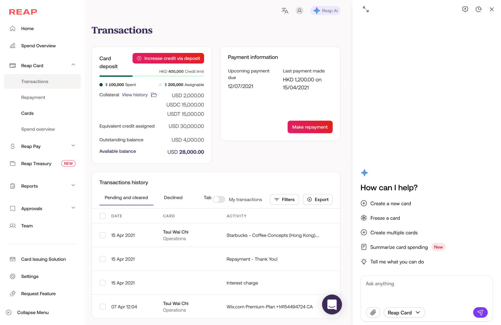
Reap AI lives as a top-level navigation item. Users navigate to a dedicated AI chat interface — the entire page becomes the AI surface.
Pros
Cons
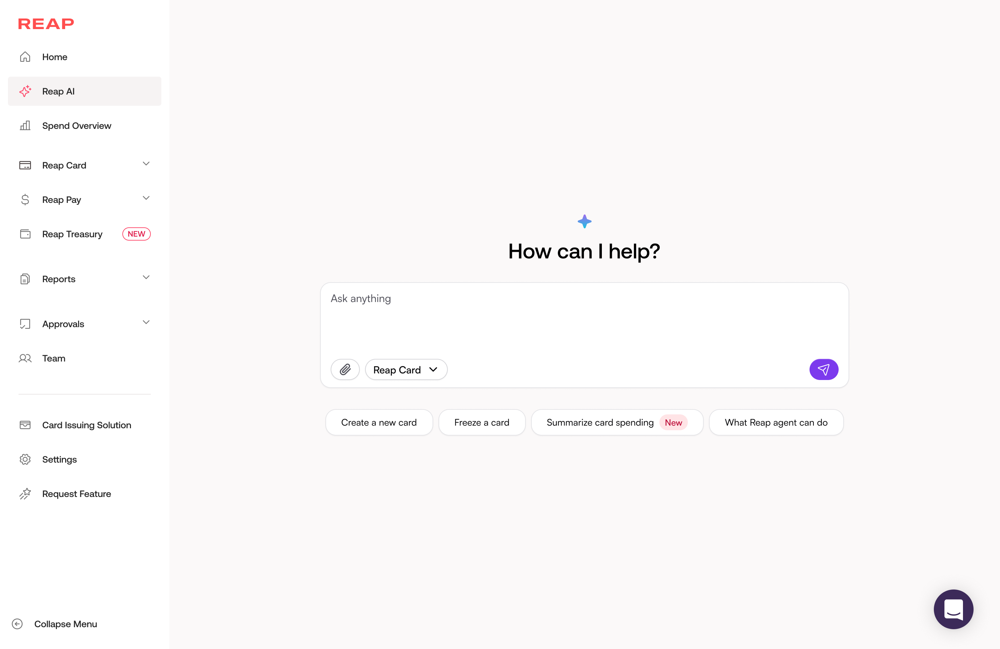
AI is woven directly into the interface. Rather than a separate AI surface, the system surfaces proactive nudges, inline suggestions, pre-filled settings, and insights contextually — as users work, at the moment they're most relevant.
Pros
Cons
Examples explored: Card expiry warning banner with auto-renewal suggestion · Spend Overview "Insights" panel surfacing unusual patterns and savings opportunities · Card settings form with AI-pre-filled spend limits based on usage patterns.
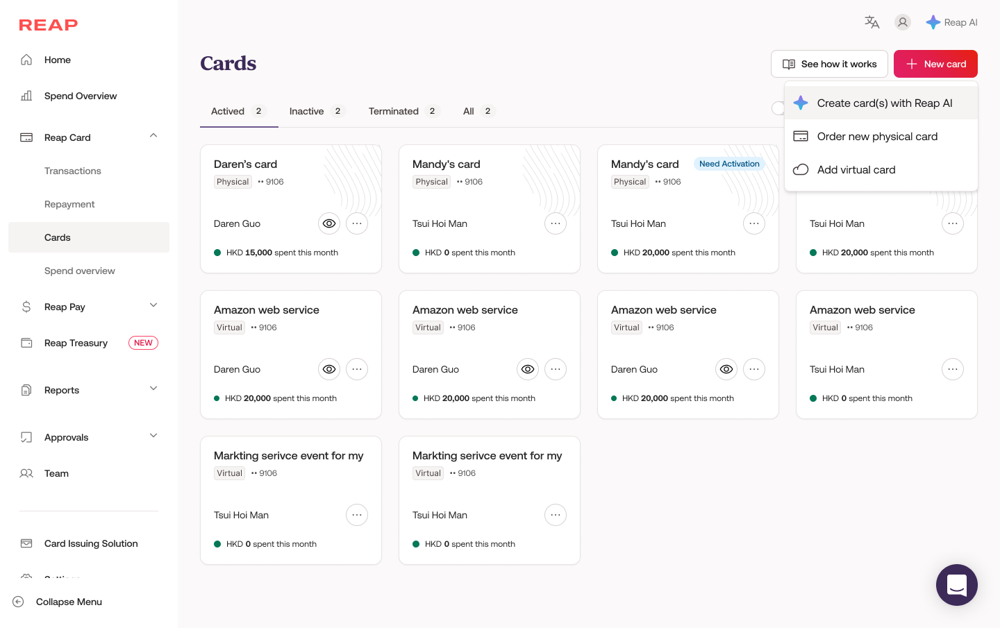
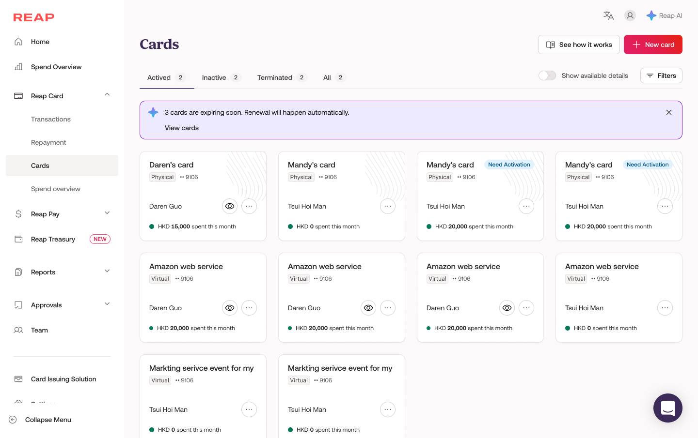
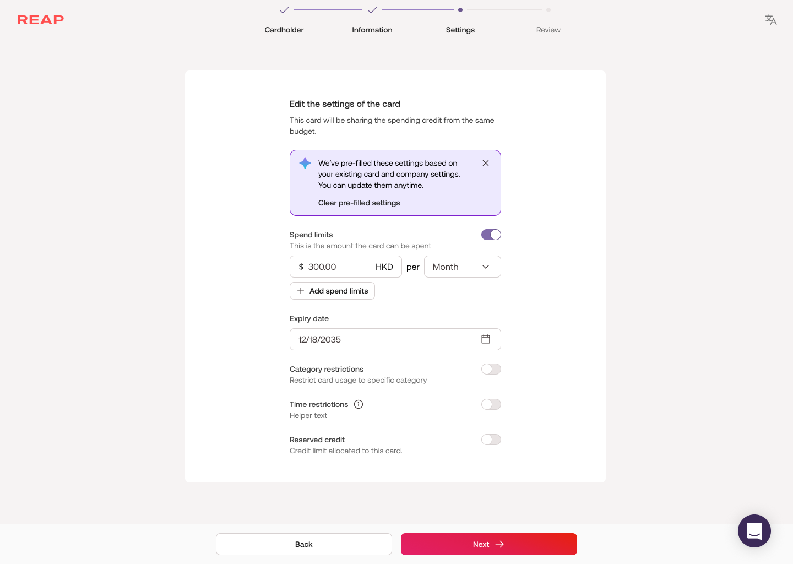
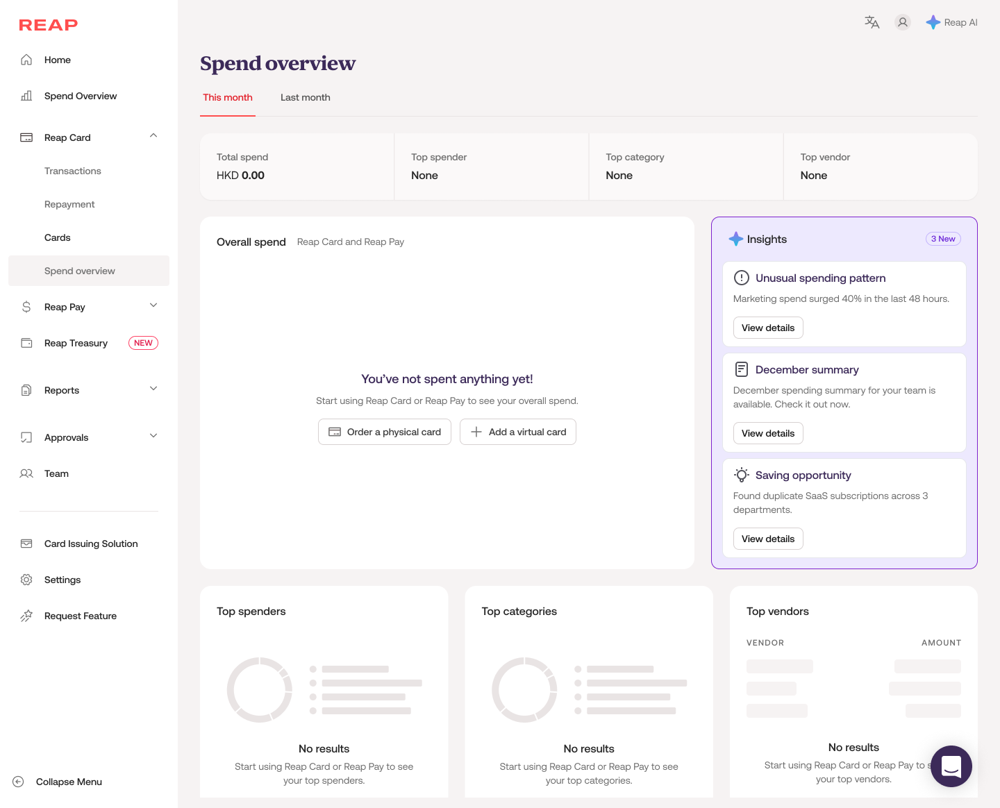
The v2 design transformed an abandoned prototype into a production-ready agent that the team is confident shipping to clients.
V2 scope was prioritized around card management first, the core operations users simply cannot do without. Create virtual card, freeze, unfreeze, terminate, update spend limit, view cards, summarise spending, each with full state coverage and edge cases.
Idle, processing, disambiguation, confirmation, success, error, out-of-scope, session timeout. Every moment is designed — not defaulted.
Including: multiple cardholders with same name, wrong category inference, mid-flow cardholder switch, permission boundary handling — all scenarios that break generic AI chat.
The AI capability framework and interaction model principles I established became the team's reference for evaluating all future AI features — not just this agent.
The idle state isn't a blank cursor. It's the agent's first impression and a trust signal.
I designed two distinct default states based on user role. Group owners, admins, and owners see the full action set: create, freeze, unfreeze, terminate, summarise spending. Individual team members see a scoped-down view, only what they're permitted to do. Quick-action chips map directly to the agent's actual capabilities, so users know what to ask before they type anything.
Three transparency signals were deliberately built into the idle state:
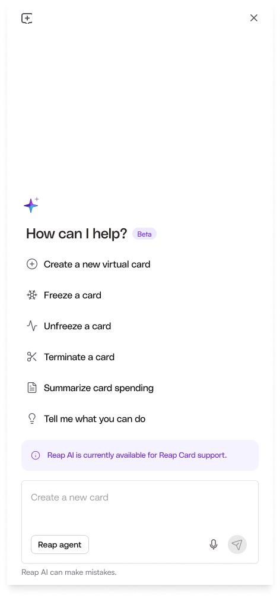
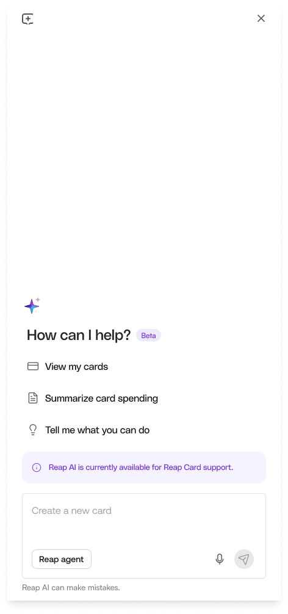
Loading states aren't a technical detail. In an AI agent, they're a trust mechanism.
I worked with engineering to confirm that response times would be short enough that a simple "Working on it…" message with a shimmer effect would be sufficient. Streaming wasn't necessary and would have added implementation overhead for minimal UX gain.
For card creation and spend summaries, we made a different call. These operations are multi-step and take longer. The agent streams its activity in real time: the "Agent activity" label appears first with a shimmer, then expands step by step, with each item showing its own loading state. Users can see exactly where the agent is — not just that something is happening, but what.
Design principle: This distinction between text and widget loading wasn't a UI decision. It was a product decision made with engineering, grounded in latency data and user trust.
Most chat interfaces scroll blindly. I designed the overflow behaviour around where the eye actually lands.
The chat window always leaves some breathing room below each message. This creates a consistent visual anchor point, so your eyes naturally rest in the upper-middle zone while reading each response — reducing the sense of content rushing to the bottom of the screen.
Responses that exceed the chat window height anchor to the top so users can start reading from the beginning immediately. An overflow button sits fixed at the bottom, giving users a deliberate, one-tap way to jump to the end when they're ready. Reading first, scrolling by choice.
I can't predict every user input. So instead of designing for individual messages, I designed a system of generic, reusable output patterns that engineering can apply consistently across any response type.
Defining these patterns meant that no matter what a user types, the agent's output stays consistent, scannable, and on-brand. It also gave engineering a clear contract with fewer edge cases and fewer one-off implementations.
Plain conversational responses with no UI chrome
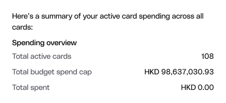
When the agent needs to confirm one specific choice, such as which cardholder
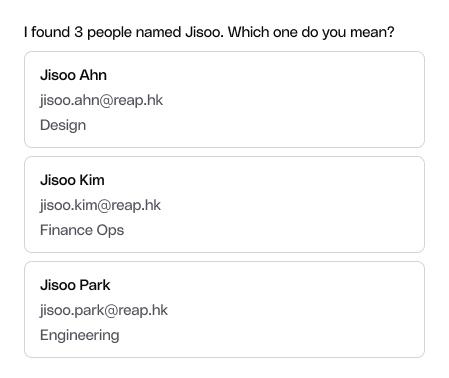
Multiple results or options presented with structure
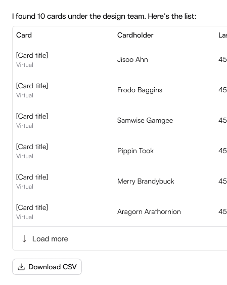
Structured card previews for confirmation, creation, and summary flows
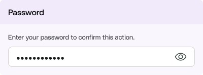
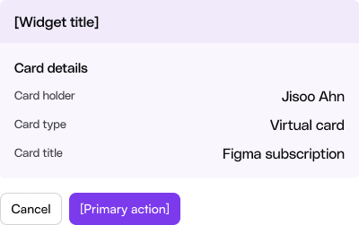
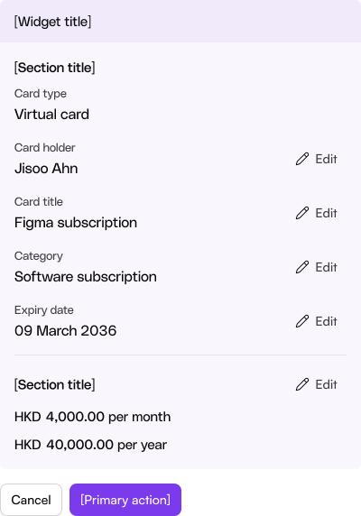
An agent that only works on the happy path isn't production-ready.
I defined four fallback scenarios, each with a design purpose, copy anatomy, and UI pattern:
When something goes wrong technically — API failure, network error, or server issue. Copy acknowledges the attempted action, confirms nothing was changed, and offers a clear next step: Retry or Contact Support. Users should never wonder if their financial data was affected.
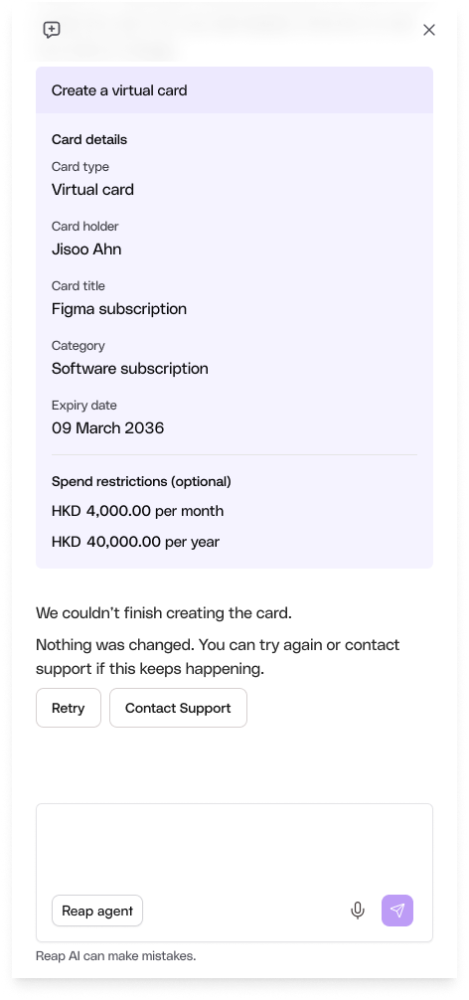
When the agent's confidence drops below 51%, it doesn't guess. It presents 2–4 closest-matching options as buttons, not text links, so users can select intent without retyping. This narrows the conversation without stopping it.
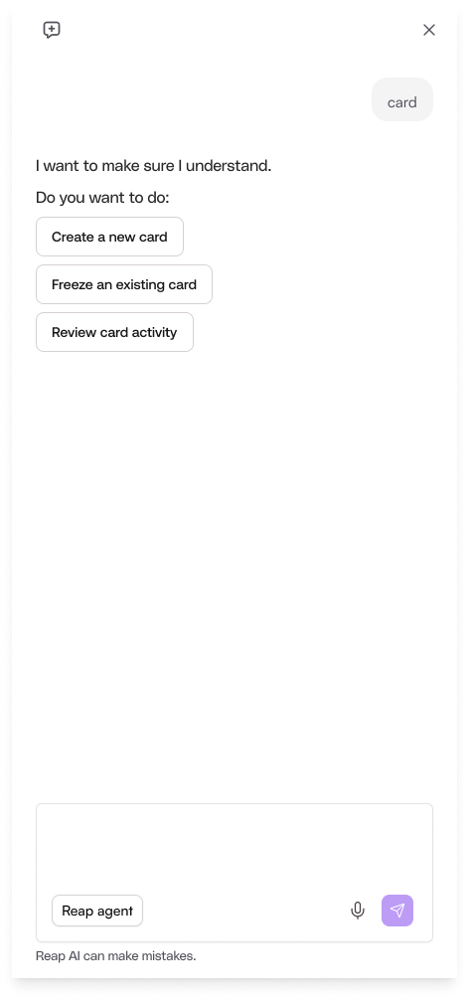
When a request is understood but outside scope. The agent doesn't apologize or explain technical limitations. It states the boundary neutrally, then immediately pivots to what it can do. Every out-of-scope response ends with an alternative, never a dead end.
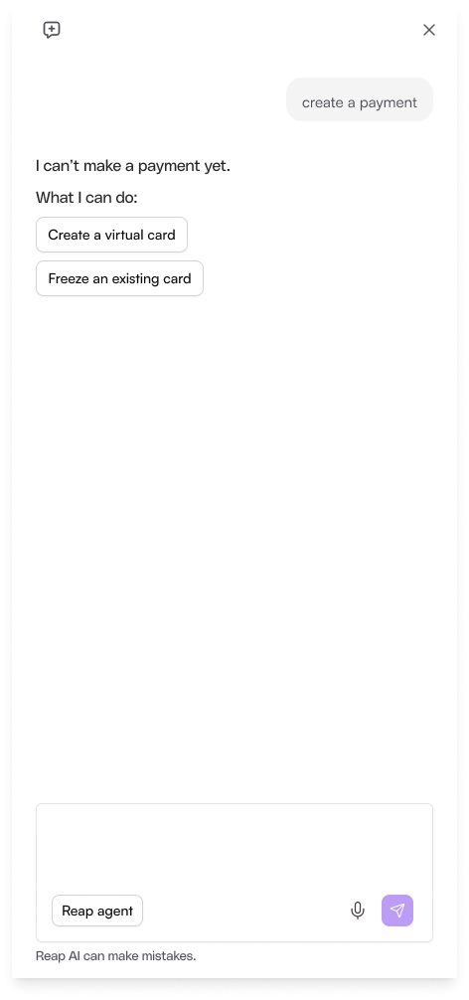
When a user without sufficient permissions attempts a restricted action. The agent names the limitation clearly and offers escalation paths — asking an admin or viewing their own cards — without blame or friction.
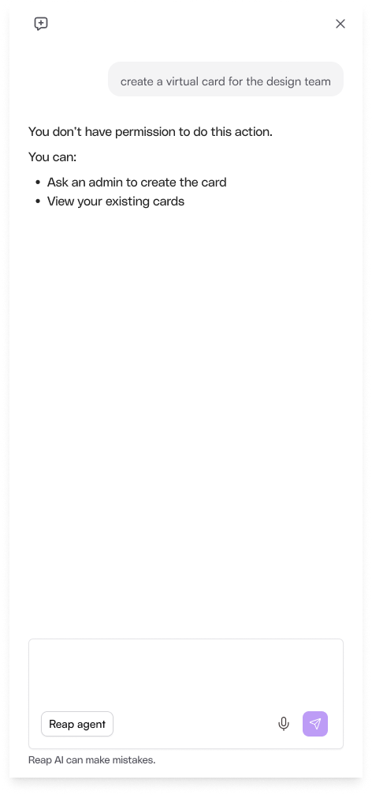
An AI agent that lies about its own state is more damaging than one that's simply slow.
In agentic products, what the system won't do is as important as what it will. Designing the out-of-scope state required drawing the line — and getting cross-functional alignment on it.
I couldn't have designed honest progress indicators without understanding why the alpha's streaming was blocked. The most impactful decisions also changed engineering priorities.
UI styling was de-prioritised for this feature — with limited resources, the priority was enabling the capability first. To keep the experience consistent with the rest of the product, I relied on the foundational layer of the existing design system and pulled in reusable components from the web design system wherever possible.
As the institutional banking group accelerated its focus on SME financing, operational inefficiencies became increasingly visible. The existing workflow relied heavily on manual coordination and fragmented systems, slowing down both customer assessment and loan processing.
Relationship managers had to navigate 16+ disconnected systems, manually validate financial exposure across entities, and spend hours preparing applications — often with uncertain outcomes. Processing a single loan application took up to 3 months.
My role: I led the end-to-end redesign of the pre-approval workflow — from discovery to delivery. I defined product direction, aligned stakeholders across business, product, and engineering, and translated complex credit and compliance requirements into structured UX flows.
I conducted interviews with users and stakeholders to map the as-is SME financing flow. Four distinct friction categories emerged, each compounding the others.
Critical information was scattered across systems, forcing users to manually aggregate and validate data before they could even begin an assessment. There was no single source of truth.
RMs spent 1–3 hours preparing applications — visiting 16 different systems and documents — without knowing if a case would convert to an offer. Effort was front-loaded with no viability signal.
Loan eligibility and exposure calculations happened outside the system. Determining group limit required checking each borrower's facility structure manually, validating against predefined criteria, and calculating thresholds in spreadsheets. This drove the 40% rejection rate and an 80% rework rate.
Compile a list of all borrowers within the group
Download facility and limit reports for each borrower
Manually calculate all existing facility limits of the group
Put together new facilities for the borrower company
Fill in the existing template to check if proposed limits exceed group or borrower thresholds. (Pass or Fail)
Key collaboration between RMs, credit managers, and approvers happened over email and chat — reducing visibility, accountability, and auditability across the pipeline.
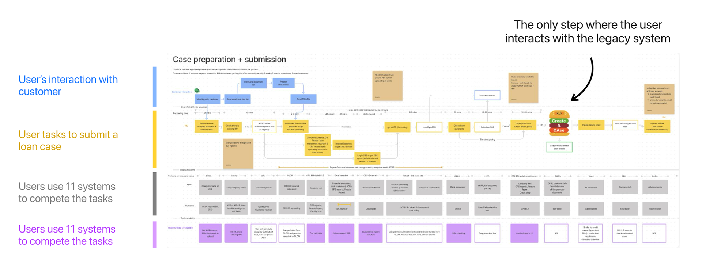
I ran a discovery process with users and stakeholders to surface friction points and pain points in the existing SME financing flow — spanning relationship managers, credit reviewers, and compliance leads.
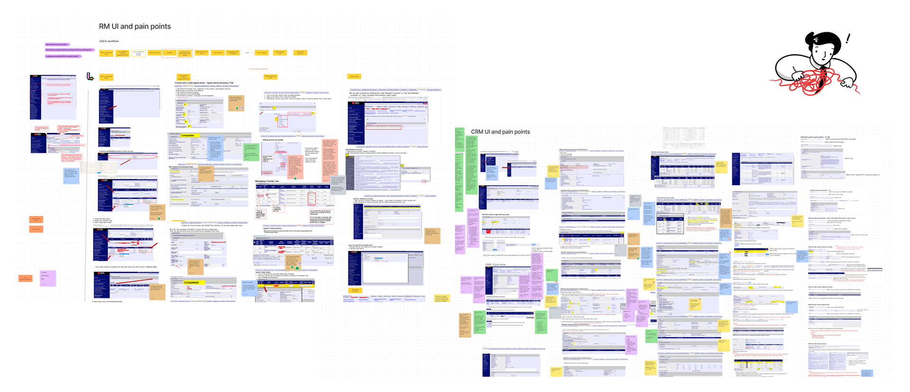
RMs couldn't tell early enough whether a case was worth pursuing. All the preparation effort happened before any eligibility signal. This meant high-effort cases that ended in rejection at the credit stage — burning hours that could have been avoided.
Group-level exposure calculations required checking each related entity's existing facilities across multiple reports. Done manually and outside the system, errors were common — and caught late. A 40% rejection rate was the downstream symptom of this upstream failure.
"Is this customer eligible?" required 16 system checks and 1–3 hours of manual work. There was no mechanism to get an early, reliable answer. The system was designed to process, not to decide.
I redesigned the 16-step eligibility assessment into a 4-step decision framework, reducing cognitive load and eliminating unnecessary system-hopping.
Instead of navigating multiple systems, users now input only key decision variables, receive automatically aggregated financial data, and view eligibility signals in a single structured flow.
Design principle: The goal wasn't to digitise the existing process — it was to redesign the process itself. Every step was only included if it was essential to making a financing decision.
RMs opened 16 different systems and documents in sequence. Each system required separate context-switching, and manual note-taking to carry information forward.
One structured flow. Key decision variables entered once. System aggregates financial data automatically and surfaces eligibility signals in context — no switching required.
Reduced dependency on 16+ systems. Enabled faster qualification of high-potential leads. Shifted the workflow from data gathering → decision making.
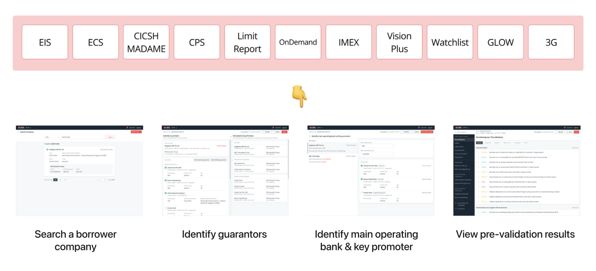
One of the biggest bottlenecks was calculating group-level exposure across related entities (DOA group). This required checking each borrower's existing facility structure, aggregating exposure data across guarantors and related parties, and manually computing against policy thresholds.
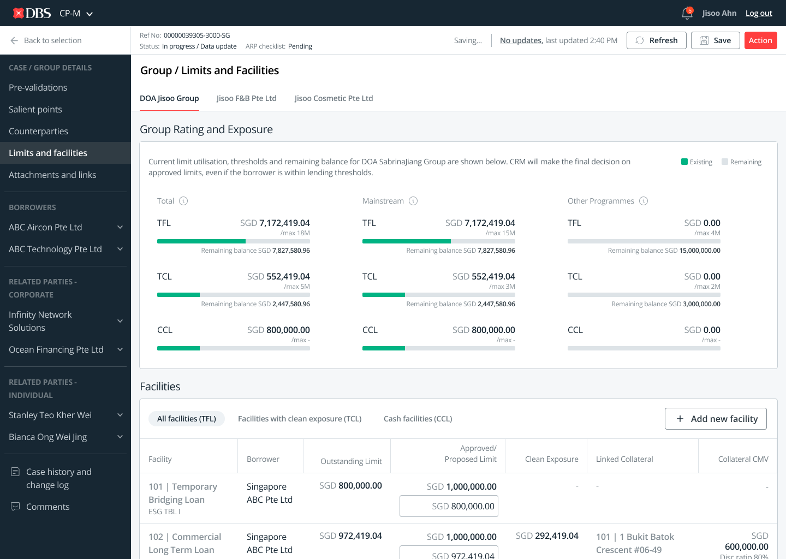
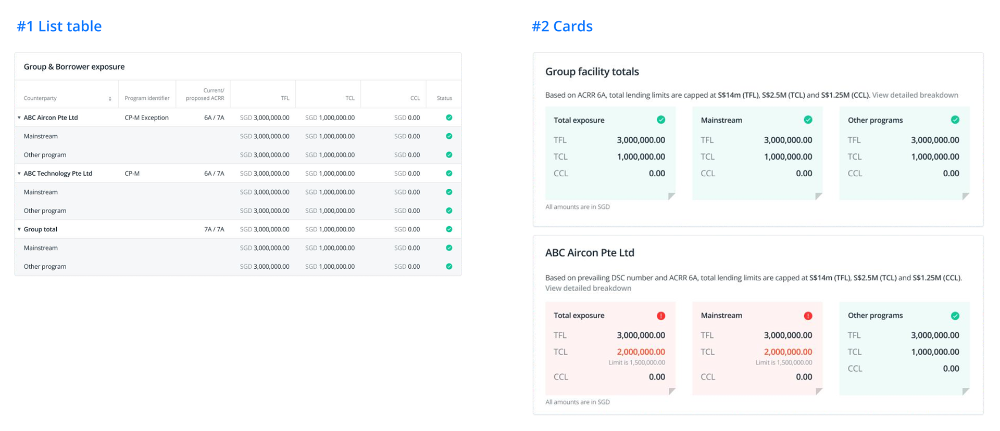
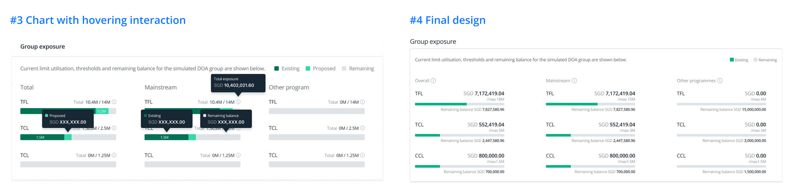
Previously, RMs and CRMs had to manually review multiple documents — bank statements, ACRA reports of related parties — before knowing if a case was viable. This wasted hours on low-probability applications.
I introduced a pre-validation layer that surfaces early eligibility signals before full application processing begins.
Design principle: Surface uncertainty early. The cost of discovering ineligibility at the credit stage is orders of magnitude higher than discovering it at the assessment stage. Front-loading the signal is a force multiplier on the entire pipeline.
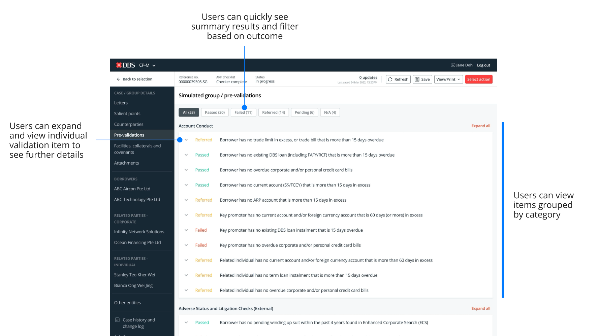
Users can assess loan eligibility of a customer in one place — without manual data input. Early signal before any significant effort is invested.
Low-probability cases are surfaced early and filtered out. RMs focus only on viable opportunities — making the pipeline significantly more efficient.
Early validation means fewer late-stage surprises. Credit reviewers receive better-prepared applications, and RMs enter the process with higher confidence in outcome.
The redesigned workflow delivered significant operational improvements across the entire financing pipeline.
End-to-end pre-approval assessment reduced from over two hours to eleven minutes — a 91% reduction in processing time per case.
Automated calculations and early eligibility signals eliminated the primary drivers of rework — late-stage rejections and manual data errors.
All credit-related data, eligibility checks, and exposure calculations now happen inside a single structured workflow — no external tools, no spreadsheets.
Pre-validation surfaces low-probability cases early. RMs and credit reviewers operate with higher confidence, investing effort only where it's likely to convert.
The interface was almost secondary. The real design work was understanding the credit logic, eligibility criteria, and exposure calculation rules — then structuring them into a flow that made decisions faster and more reliable.
Optimising later steps had diminishing returns. Front-loading the eligibility signal — before any significant effort was invested — was the single highest-leverage change in the entire redesign.
Automating DOA group calculations wasn't just about saving time. It removed the mental overhead of holding financial relationships in working memory — letting users focus on judgement instead of arithmetic.
Users don't just need accurate data — they need to understand where it came from, how it was calculated, and what it means for their decision. Transparency is a UX requirement, not a nice-to-have.
"Designing internal tools for a bank taught me that the most important design decisions aren't visual — they're structural."— Jisoo Ahn, 5 Unexpected Lessons Learned While Designing Internal Tools for a Bank
Ascenda's merchant portal is a one-stop platform for merchant partners — airlines and hotels — to explore potential Financial Institution (FI) partnerships, track existing ones, manage marketing campaigns with partnered FIs, and monitor campaign performance.
The Financial Institution pages sit at the centre of this workflow. They're how merchants discover new FI partners, qualify them, move them through the pipeline, and see the ones already live with them — directly tied to revenue generation across the platform.
My role: I led the redesign end-to-end — from discovery and research with internal and external users, through information architecture and interaction design, to usability testing and post-release analytics review.
Poor usability made it hard for merchant partners to browse FIs efficiently. Internal teams were absorbing the cost — fielding repeated support inquiries on how to read the page, what the labels meant, and where to find specific partners. For a page directly tied to revenue, that friction was expensive.
Terms like 'Active' and 'Approved' didn't match merchant users' mental models. A star icon was used to indicate a live FI — but to merchants it read as "favourite," not "live partnership."
'Pipeline' and 'Active' were two top-level nav tabs — but given the moderate depth of the IA, splitting the same entity across two destinations was redundant, forced extra navigation, and obscured the partnership journey.
The two-tab structure made it hard to add new stages, new actions, or new merchant prompts without further fragmenting the navigation. Every future feature would have meant another tab — or another workaround.
I combined desk research with interviews of internal users (sales, BD, MP team) to surface why the existing page was hard to use, and mapped the full partnership launch process to find what the IA should support.
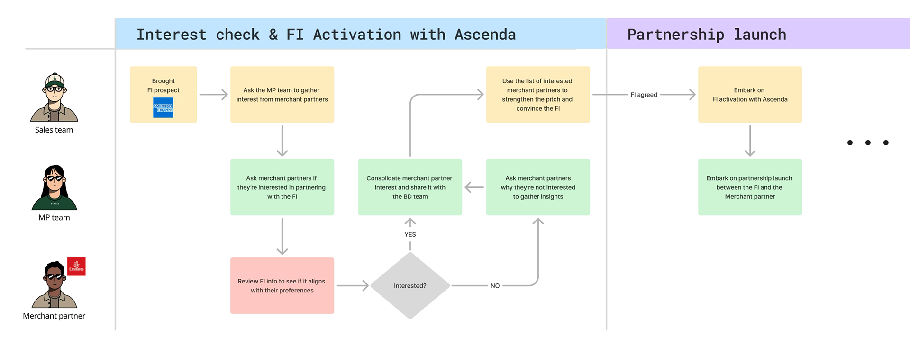
'Active' and 'Approved' read as internal operational states, not as the partnership stages merchants think in. The 'star' icon was the most consistent source of confusion — universally read as "favourite," never as "live partnership."
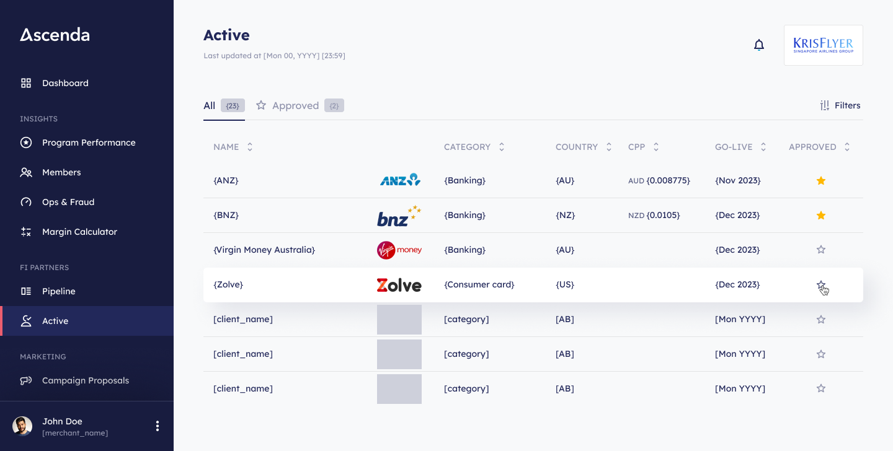
The two-tab IA reflected how the system stored FIs — not how merchants browsed them. Users wanted to see all FIs across stages in one place, with the stage as a property of the FI, not as a destination.
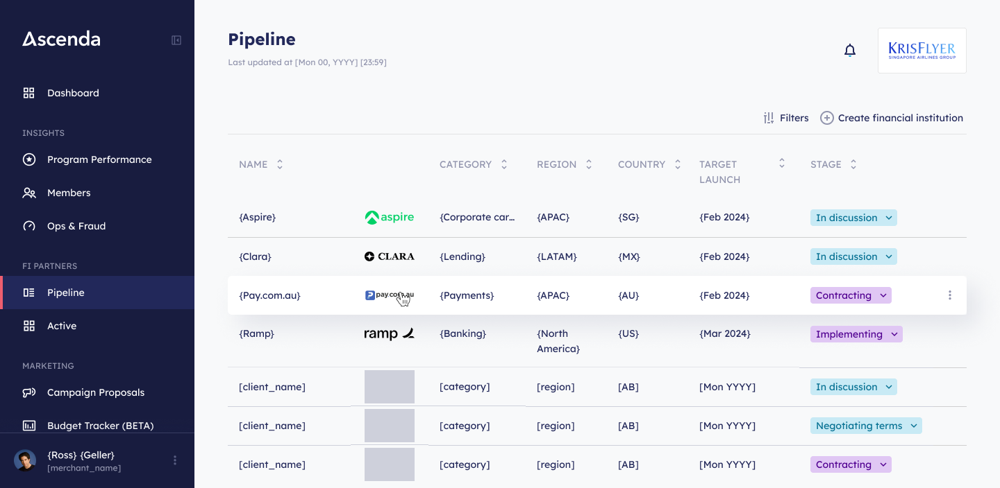
Mapping the full launch process surfaced three clean stages: Opportunities → Going live → Live. Each stage had a distinct definition and a distinct use case for both merchant and internal users — a structure the existing IA didn't expose.
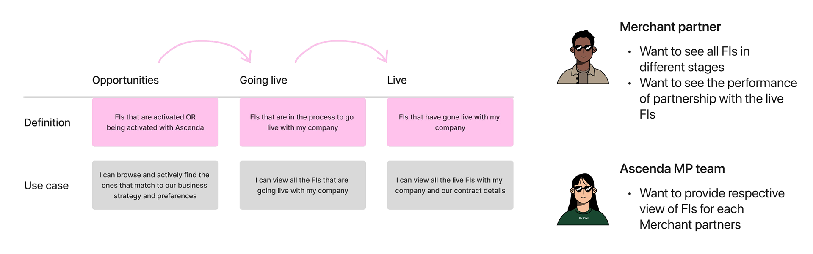
Goal we aligned on: Improve clarity and comprehension of the pipeline content. We committed to two success metrics — a leading indicator (80% success rate on key tasks in usability testing) and a lagging indicator (increase in weekly page views and average views per partner).
I consolidated the two existing tabs into a single 'FI Partners' page with three stages — Opportunities → Going live → Live — directly mirroring the partnership launch process surfaced in research.
The same page serves two distinct audiences: merchant partners (external) and the Ascenda MP team (internal). They share the same mental model of the partnership journey — but not the same actions. Audience-specific affordances layer on top of a shared structure.
I also restructured the main navigation — grouping FI Partners and Campaign Proposals (the two revenue-generating surfaces) at the top, with insights and marketing tools organised beneath.
Design principle: The IA should mirror the user's mental model of the work — not the system's storage model. Stage is a property of a partnership, not a destination in the nav. And one structure can serve multiple audiences when stage is shared truth.
FIs that are activated or being activated with Ascenda. Use case: merchants can browse and actively find the ones that match their business strategy and preferences.
FIs that are in the process of going live with the merchant. Use case: merchants can track which deals are mid-launch and what the next step is.
FIs that have gone live with the merchant. Use case: merchants can view all live partnerships and the contract details associated with them.
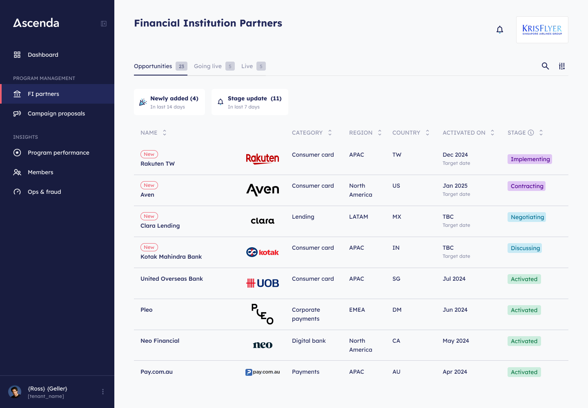
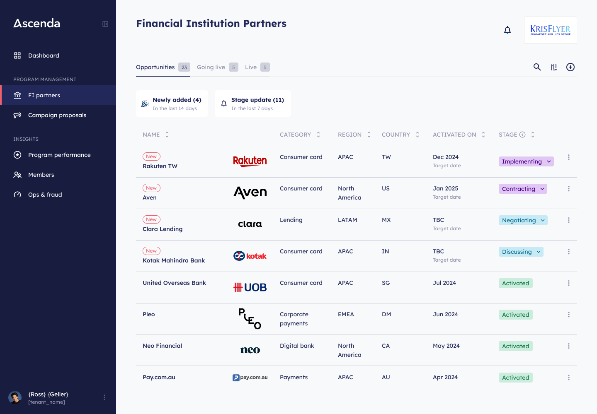
Replaced an internal-storage IA with a journey-shaped one — and made the same page serve both audiences. Stage is now a filter, not a fragmented destination; audience-specific affordances layer on a shared structure.
The previous details page mixed high-value content with low-value content, and used a rigid layout that didn't accommodate the different states an FI partnership goes through.
I redesigned it around a card-based layout — removing low-value content, grouping high-value content into cards that can vary by stage, and making the page easy to extend as new content types come in.
Design principle: Design the container so the next feature is a card, not a redesign. Anticipating future surface area was as important as fixing today's problems.
Content is grouped into discrete cards. Each card has a clear purpose and can appear or hide per stage — so the page composition adapts to the partnership's current state.
Different cards surface for Opportunities vs Going live vs Live. Users see exactly what matters at the stage they're in — and nothing they don't.
The tab structure was deliberately designed to accommodate new process steps, merchant prompts, and action types — anticipating a follow-on project that has since shipped using exactly this scaffolding.
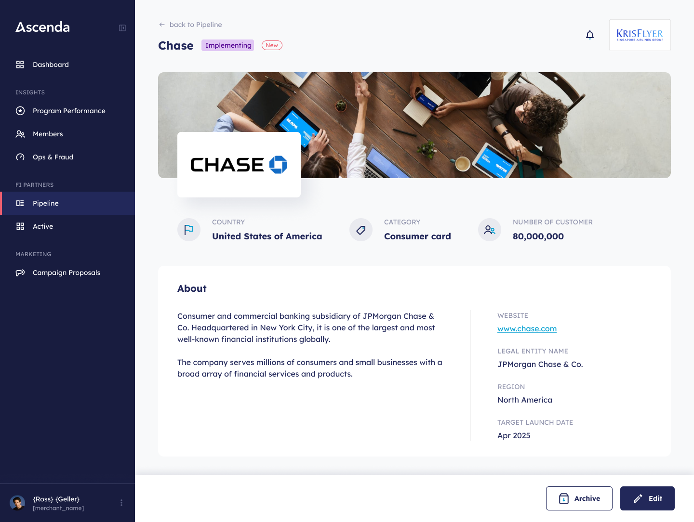
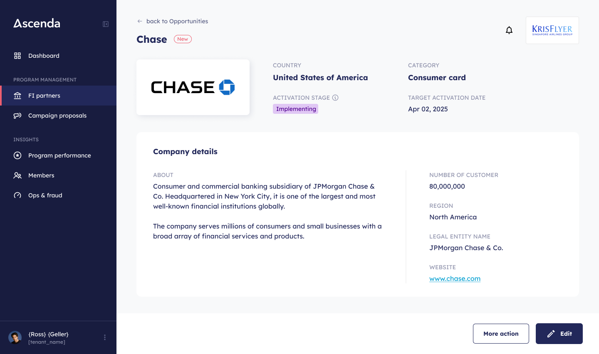
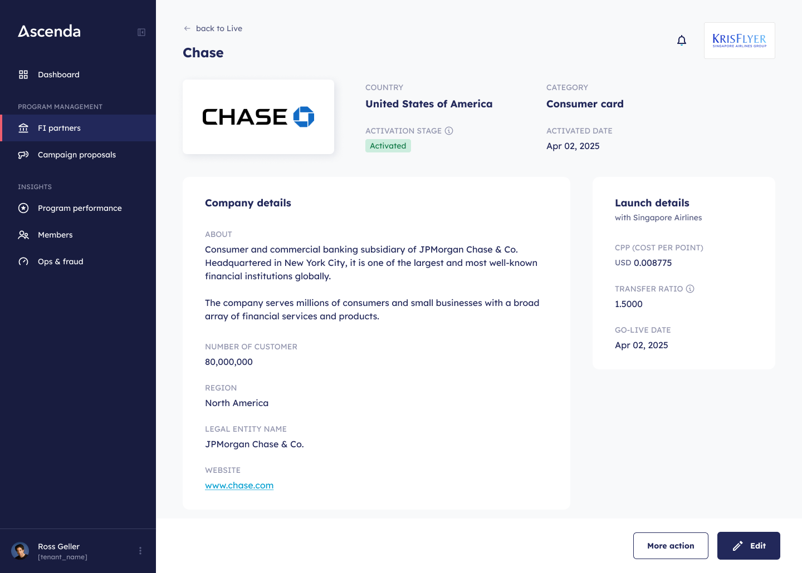
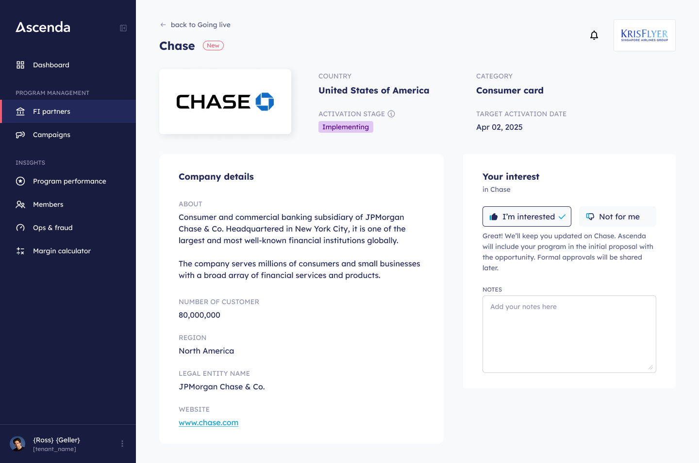
The redesigned FI Partners page hit both success metrics we committed to in research — and the lagging indicator outperformed expectations.
Post-release analytics showed the FI Partners tab — previously underused — became the most-viewed page in the app, exceeding the lagging indicator we set.
Usability testing on the key user tasks defined during research returned an 80% success rate — meeting the target we set with the team before delivery.
The two-tab Pipeline / Active split was retired. The single FI Partners page mirrors how merchants actually think about the partnership journey.
The tab structure designed for future steps has since been used to add new process stages and merchant prompts — without re-architecting the page.
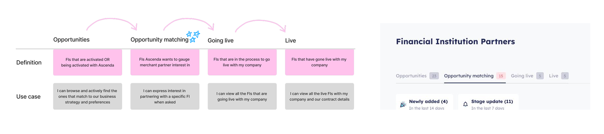
The most defensible design decisions weren't the ones that looked best in Figma — they were the ones tied to a measurable change in user behaviour or business outcome. Committing to leading and lagging indicators upfront kept the team aligned on what "good" actually meant.
Anticipating that the tabs would later carry new process steps shaped how I designed the container. A follow-on project ended up extending exactly that scaffolding — which would have required a re-architecture if I'd optimised only for the immediate scope.
Merchants and internal users don't share actions, but they share a mental model of the partnership journey. Designing one structure around that shared mental model — and layering audience-specific affordances on top — was cleaner than building two separate pages.
"It's just so confusing" wasn't a label problem or an icon problem — those were the symptoms. The root cause was an information architecture that mirrored how the system stored data instead of how users thought about it. Fixing the IA made the surface-level fixes obvious.
The bank processes over 1,200 large corporate account opening cases per year, each taking 46 days on average to complete. The entire workflow — document requests, verification, signing, KYC, and account opening — was running 100% manually through emails and phone calls.
The team set out to digitalise the process end-to-end, with the goal of decreasing operational costs and increasing efficiency across two distinct user groups: an internal KYC team and an external customer administrator.
My role: I led design end-to-end across two platforms — an internal KYC console and an external customer portal. I ran discovery with internal users, mapped service blueprints, drove product direction with the business team, and delivered GUI, flows, prototypes, and UI scenarios. I also contributed new patterns to the design system.
I interviewed users on both sides and walked the existing process end-to-end. Five distinct bottlenecks emerged — each one slowing the case down, and each one absorbing manual effort that should never have existed.
Required documents vary by product type and business type. The KYC team had to check the document requirement guideline manually for every case — a fragile lookup with no system support.
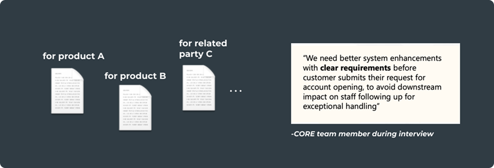
Verified documents and information were used for KYC — but the KYC team had to extract and enter every field manually, cross-checking between attachments and the case form. Time-consuming and error-prone.
Both parties spent significant time inspecting their inboxes to find the right email and review its content. The cost compounded with every additional document — and every case had many.
The KYC team kept documents on local devices and tracked readiness in a separate note or spreadsheet. Customers had no visibility at all — and frequently asked their RM or the KYC team for status, adding more inbound work.
Signing was physical. The customer administrator collected signatures from all directors, then arranged courier delivery to the bank — a logistically cumbersome step that added days per case.
I mapped every party involved in the process and identified the two personas the design had to serve in parallel: the KYC team on the internal side, and the customer administrator on the external side. Each had distinct tasks, but both depended on the same documents flowing through the same case.
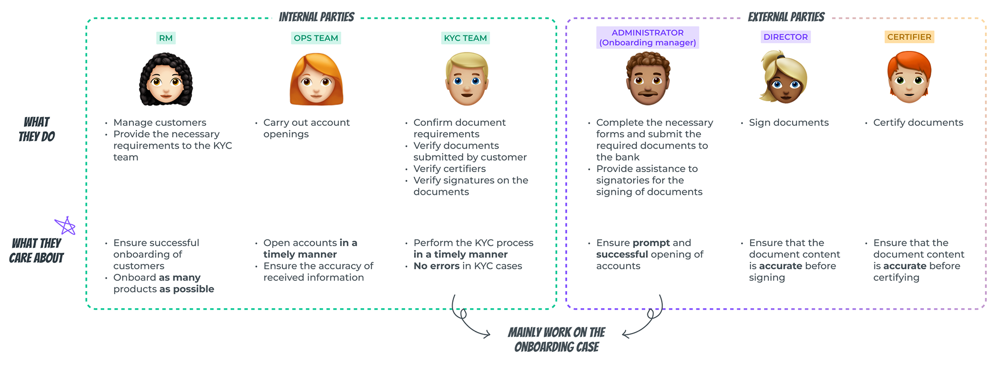
Every minute the KYC team spent re-typing information from attachments into a case form was a minute lost to a problem the system should have solved. Automating data flow across stages became a primary goal.
Email-based document exchange was the largest single source of delay. Moving exchange into a shared, structured surface — with per-document status — was the highest-leverage change to compress case time.
Customers asked about status because they couldn't see it. Internal users tracked status in spreadsheets because the system didn't surface it. Making progress visible — to both sides, in real time — would cut inbound inquiries at the root.
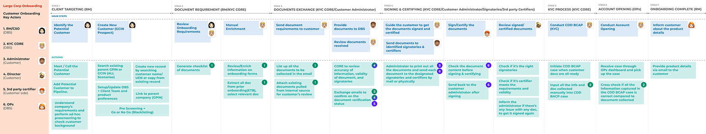
I designed a holistic end-to-end onboarding journey consisting of four distinct stages — Draft, Document Exchange, Signing & Certifying, and KYC / Account Opening.
Each stage has a clear owner, a defined input, and a defined output. The same stage structure is visible to both internal and external users, so both sides know exactly where a case is and what's next.
Design principle: Give both audiences a shared mental model of the work. Stage is the unit of coordination — not the inbox, not the spreadsheet.
RM kicks off the case digitally — customer info captured in a structured form, replacing the initial email exchange.
Required documents are exchanged in a shared list across both portals — no email back-and-forth, with per-document status.
Documents are signed digitally via DocuSign — replacing the physical signing and courier step.
KYC case is auto-populated from upstream stages — the team enriches rather than re-enters, and proceeds to account opening.
Replaced an email-driven workflow with a journey-shaped service. Both internal and external users now monitor the same stages, with the same definitions, in the same flow.
The largest source of internal effort was data re-entry. The same information moved across the RM, the KYC team, and the Ops team — and at every handoff, someone retyped it. I redesigned the workflow so that information captured upstream flows through every downstream stage.
To compress case time and cut inbound inquiries, I designed three connected surfaces that work together across the internal console and the external customer portal — turning the document exchange, status visibility, and signing into a single seamless flow.
Design principle: Give both sides the same view of the same work. Status isn't a question to answer over email — it's a property of the document, visible to everyone with a stake in it.
A single document list is shared across both portals — no back-and-forth emails. Customers can work on documents one by one with per-item status; internal users can send back only the items that need revision, with a reason attached.
Customers unlock the case via an OTP sent to their mobile, then follow a progress widget that shows exactly where they stand. A to-do list surfaces non-sequential tasks per stage, so customers can act without waiting on instructions.
Digital signing is the default — integrated with DocuSign for one-click sending. Both KYC team and customers see real-time progress in their portal, and a user-friendly error-handling system surfaces clear, task-specific messages when an unhappy flow needs resolving.
The redesigned onboarding workflow replaced a fully manual, email-driven process with a structured, two-platform service. The structural impact spans all three focus areas the team committed to in discovery.
Replaced an undefined email-based process with a four-stage journey — Draft, Document Exchange, Signing & Certifying, KYC/AO — visible to both internal and external users in real time.
Internal KYC console and external customer portal both express the same stages, the same document list, and the same status — so both sides operate from a shared mental model of the work.
Information captured at the Draft stage flows through document generation and KYC. The team enriches data rather than rebuilding it — removing the largest source of internal effort and error.
Per-document status and a customer-facing progress widget surface where every case stands at any moment — cutting the inbound "what's the status?" load on RMs and the KYC team.
Internal and external users have different tasks but the same case. Designing one stage model, one document list, and one progress concept — then layering audience-specific affordances on top — produced a more coherent service than two parallel products would have.
The biggest internal gains didn't come from new features — they came from removing the re-typing that happened at every handoff. Information that flows through the system is information no human has to copy.
Customers asked for status because they couldn't see it. The progress widget didn't add capability — it just exposed truth the system already knew. That single piece of transparency removed a meaningful share of inbound questions.
Making digital signing the default — and explaining the benefits — moved customers off physical signing faster than offering it as one option among several would have. The default is a design decision, not a neutral starting point.